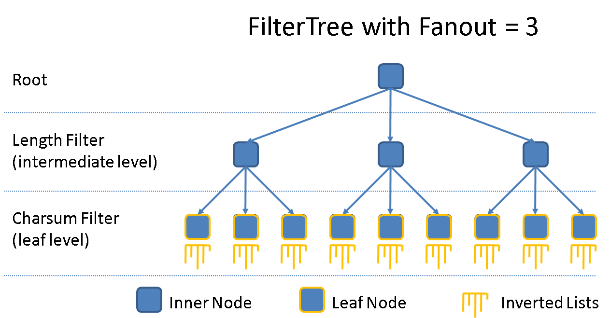
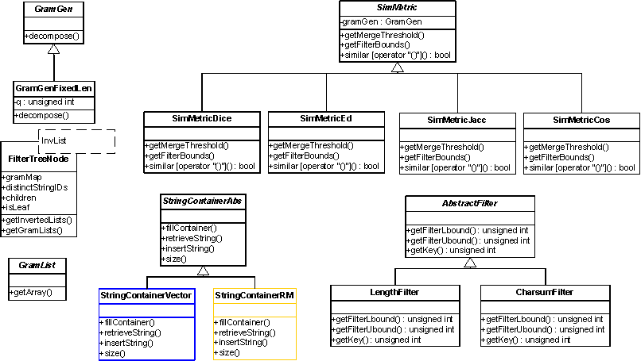
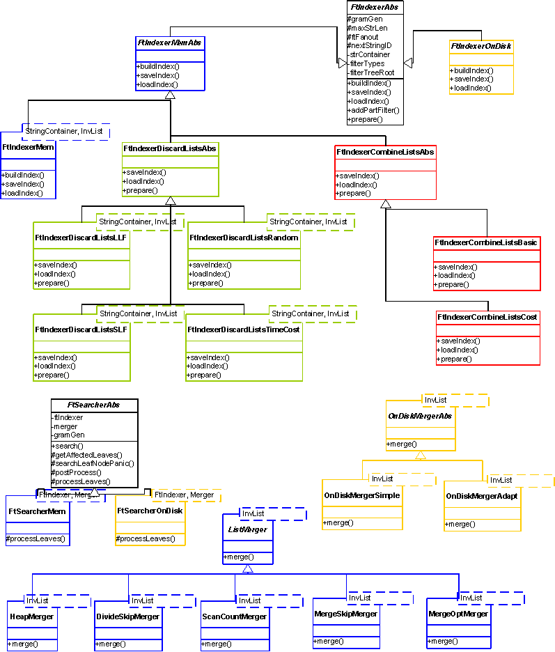

AppString > AppStringDoc
This module supports efficient approximate string search on a collection of strings. An approximate query asks for all strings in the collection that are "similar" to the query string for a given similarity function and similarity threshold.
Many applications need to answer approximate string queries. The following are a few examples:
We provide three different flavors of indexing+searching, each of which provide specific optimizations for improving query performance:
We support the following similarity functions / distance measures:
We support the following single-signature filters (e.g. for partitioning the string collection):
The index structure (filtertree + inverted index) can be saved/loaded to/from a file.
To answer queries efficiently this module uses an inverted-list index on the q-grams of the strings in the collection. That is, each string is decomposed into substrings (grams) of size q using a sliding window, and then for each gram we build a list of string ids containing that gram (the inverted list of that gram). The process of answering queries is based on the observation that if two strings are similar, then they must share a certain number of common grams (depending on the similarity function and similarity threshold). False-positives must be removed in a post-processing step, i.e. the true similarities are computed.
In addition to the above we can further increase the performance of queries by using filters. A single-signature filter partitions the string collection into disjoint subsets based on some criteria. For answering a query we only need to consider some of the subsets. For example, if we were looking for all strings in the collection within an edit-distance of 1 to the string "abcde", then we know that any answer string must have a length in [4,6]. So, if we partition the string collection using the length of the strings we can avoid processing irrelevant string ids during query answering. The charsum filter is similar to the length filter. We partition the data strings based on their charsums (sum of characters in the string). For query answering we can determine a range of charsums that answers must lie in.
The filtertree structure facilitates the use of filters. Each level in the tree partitions the string collection based on one filter. Each leaf node contains a gram inverted-index on the subset of strings belonging to that leaf. For answering a query we traverse the tree to identify leaf nodes that "survive" the filtering criteria, and probe the inverted indexes attached to those leaves to get a list of candidate answers. The following is an example of a filtertree with a fanout of 3 and both the length and charsum filter applied:

In most cases, using exactly one partitioning filter yields the best performance. An intuitive (but simplified) explanation is as follows:


The StatsGenerator allows collecting of performance data on the approximate string search library. For example, different filters, merging algorithms, datasets, query workloads can be tested. A good start is perftest.cc included in the filtertree folder. The performance numbers are written to an output file (e.g. perftest.cc writes to "perftest_search_stats.txt"). The StatsGenerator is intended for advanced users who are familiar with the algorithmic details of approximate string search. The numbers generated depict different steps in the process of query answering and will only be understood by people familiar with the subject. For getting an idea of the query performance using certain parameters it is sufficient to focus on the field "total time" which measures the average query performance of the given workload.